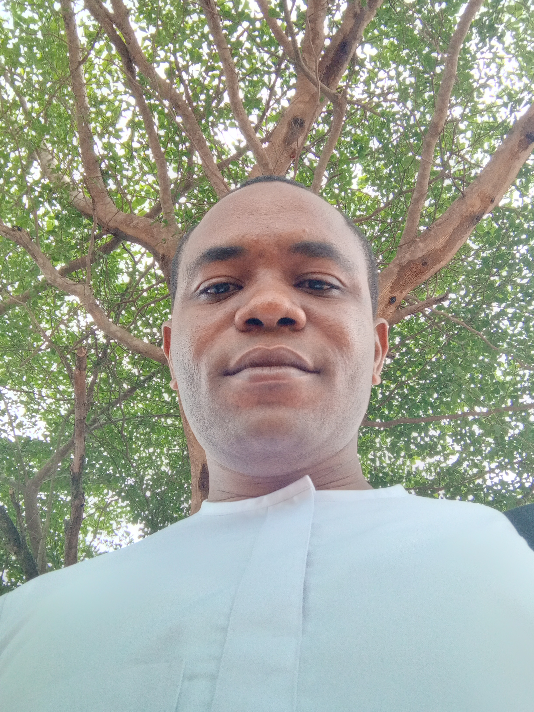

About Us
At ConfByte Academy, we're passionate about education and digital training. We believe that everyone, regardless of their background, should have access to the skills and resources they need to succeed in the digital age.
-

Samuel Onoja
I've always had a fascination with technology, but it wasn't until recently that I made the bold decision to dive headfirst into the world of tech as a full stack software engineer. And let me tell you, it's been quite the ride!
What motivated me to make this transition was my unyielding passion for empowering the younger generation, both in my community and beyond. I grew up witnessing firsthand the struggles of underprivileged youth and how limited access to technology and digital skills held them back. I knew that I wanted to make a difference, and I believed that mastering the latest technologies and software tools would be the key to unlocking a brighter future for these kids.
Since then, I've been working tirelessly to create innovative digital solutions that are transforming the way young people learn and engage with technology. From online learning platforms to mobile apps, I've been at the forefront of creating cutting-edge digital tools that are changing the game for a new generation of learners and creators.
But it's not just about the tech for me. What drives me most is the impact that my work is having on the people I'm serving. I believe that technology is only as powerful as the people who use it, and that's why I've been so dedicated to empowering younger ones in my community and beyond. Through mentorship and training programs, I'm able to share my knowledge and expertise with young people from all backgrounds, helping them to develop the digital skills they need to succeed in today's fast-paced world.
The journey to becoming a full stack software engineer has been nothing short of thrilling. I've encountered challenges, setbacks, and roadblocks, but I've also experienced the joy of pushing past those barriers and creating something truly impactful. And I know that this is only the beginning. With each day that passes, I'm more inspired than ever to continue innovating and empowering the younger generation to unlock their full potential.